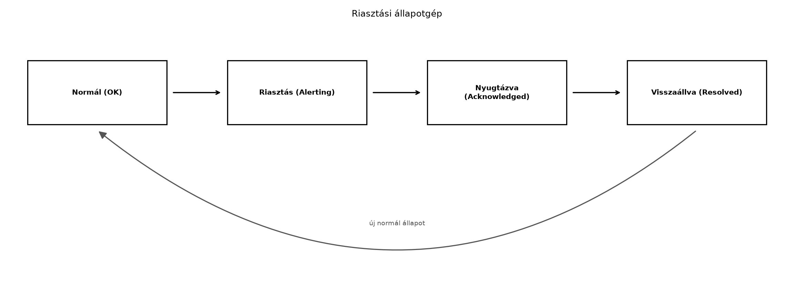

A TerraSense üvegházban a növények állapota akkor is romolhat, ha senki sem nézi a Grafanát. A hőmérséklet túllépheti a kritikus értéket, a talajnedvesség túl alacsony lehet, vagy ami még rosszabb: a szenzorcsomópont egyszerűen leáll, és nem érkezik több adat. Az operátorok nem figyelhetik folyamatosan a dashboardot, ezért a rendszernek magának kell észlelnie a rendellenességeket, és értesítenie kell a megfelelő személyt. A rosszul beállított riasztások azonban hamis pozitívokkal áraszthatják el az üzemeltetőt, ami riasztási fáradtsághoz vezet, és a valódi krízisek elvesznek a zajban. Ebben az alfejezetben olyan riasztási szabályokat tervezünk, amelyek megbízhatóan jelzik a problémákat anélkül, hogy felesleges zajt generálnának.
Definíció. A riasztási szabály (alert rule) egy kiértékelhető feltétel, egy időtartam és egy súlyossági szint együttese. A feltétel lehet küszöbátlépés, változási sebesség vagy hiányzó adat; az időtartam határozza meg, hogy a feltételnek mennyi ideig kell folyamatosan fennállnia a riasztás kiváltásához; a súlyosság pedig az értesítési csatornát és az eszkalációt befolyásolja.
A TerraSense-ben három alapvető riasztási osztályt különböztetünk meg:
state topicban megjelenő local_alert
mezővel. Ez lehet szenzorhiba, alacsony akkumulátorszint, vagy a
beágyazott szoftver watchdog újraindulása.A folyamat- és adathiány-riasztásokat a backend (Grafana) és az edge
is kiértékelheti. Az edge-riasztás alacsony késleltetést biztosít akkor
is, ha a felhőkapcsolat megszakad, de az állapotot akkor is továbbítani
kell a backend felé, amikor a kapcsolat helyreáll. A TerraSense-ben az
edge aggregátor már előállít egy local_alert mezőt a
terrasense/<site>/<node>/state retained
topicra; ezt a backend felhasználhatja, de a végső döntést és az
értesítést a központi riasztási motor hozza meg, hogy az értesítési
csatornák egységesek legyenek.
A riasztási szabályoknak két fontos mechanizmust kell tartalmazniuk:
A riasztás életciklusát a következő állapotgép írja le:

Az ábra azt mutatja, hogy a riasztás akkor vált ki, ha a feltétel az időtartam alatt fennáll. Az operátor nyugtázhatja a riasztást, ami nem szünteti meg a mögöttes állapotot, csak jelzi, hogy tudomásul vették. Amikor a feltétel megszűnik, a riasztás visszaáll, és a szabály újra normál állapotba kerül.
A küszöb-riasztás hiszterézises kiértékelését a következő C++-szerű pszeudokód mutatja:
bool evaluate_threshold(double current, double high, double low, bool &alerting) {
if (!alerting && current > high) return true; // bekapcsolás
if (alerting && current < low) return false; // kikapcsolás
return alerting; // nincs változás
}A high és low közötti sáv a holtsáv
(deadband), amelyben az állapot nem változik.
Az alábbi táblázat összefoglalja, hogy a riasztási szabályt az edge-en vagy a backendben érdemes-e kiértékelni.
| Szempont | Edge riasztás | Backend riasztás |
|---|---|---|
| Késleltetés | Alacsony, helyben dönt | Hálózati körülményektől függ |
| Offline működés | Működik, ha a felhő elérhetetlen | Nem működik |
| Globális állapot, korreláció | Korlátozott | Teljes, több eszköz adataiból |
| Konfiguráció frissítése | Lassabb, eszközre kell juttatni | Azonnal, központilag |
| Erőforrásigény az eszközön | Alacsony, de nem nulla | Nincs |
| Értesítés, eszkaláció | Helyi (pl. hangjelzés) | E-mail, webhook, SMS, push |
A TerraSense-ben mindkét szintet használjuk: az edge az azonnali,
biztonságkritikus döntéseket hozza meg (pl. öntözőszelep leállítása túl
alacsony talajnedvesség esetén), a backend pedig az összes eszközre
kiterjedő, értesítéssel járó riasztásokat kezeli. A
local_alert állapotot a backend is figyeli, így az edge
eseményei bekerülnek a központi riasztási folyamatba.
Az értesítési csatornák kiválasztásánál vegyük figyelembe a súlyosságot és az üzemeltetési modellt:
Az eszkaláció azt jelenti, hogy ha a riasztást nem nyugtázzák egy adott időn belül, akkor magasabb szintű értesítés indul. Például: először e-mail, 15 perc után webhook a csatornába, 30 perc után SMS a vezetőnek. Ezzel elkerülhető, hogy egyetlen elérhetetlen személy miatt a probléma észrevétlen maradjon.
Tegyük fel, hogy a TerraSense gh1 üvegházában a
hőmérsékletre vonatkozó szabály a következő:
A következő idősor érkezik percenként (illusztratív adatok):
| Idő (perc) | Hőmérséklet (°C) | Állapot | Megjegyzés |
|---|---|---|---|
| 0 | 33,0 | Normál | |
| 1 | 34,5 | Normál | |
| 2 | 36,0 | Figyelés | Feltétel igaz, időtartam indul |
| 3 | 35,8 | Figyelés | |
| 4 | 35,5 | Figyelés | |
| 5 | 35,6 | Figyelés | |
| 6 | 35,2 | Riasztás | 5 perc eltelt, folyamatosan > 35 °C |
| 7 | 36,0 | Riasztás | |
| 8 | 34,8 | Riasztás | Még 34 °C felett, nincs visszaállás |
| 9 | 33,9 | Visszaállás | 34 °C alá esett |
A 6. percben a riasztás kivált, mert a feltétel a 2–6. percekben öt percen át fennállt. A 9. percben a hőmérséklet 33,9 °C, ami a 34 °C-os kikapcsolási küszöb alatt van, ezért a riasztás megszűnik. Ha a hiszterézis nem lenne, és a küszöb 35 °C lenne mindkét irányban, akkor a 8. és 9. perc közötti ingadozás esetleg többször is ki-be kapcsolná a riasztást.
Ugyanezt a logikát alkalmazhatjuk az adathiány-riasztásra: ha nem
érkezik telemetria a terrasense/gh1/n001/telemetry topicról
a 10 perces ciklushoz képest számított türelmi időn belül, akkor
riasztás. A Grafanában ezt olyan lekérdezéssel valósítjuk meg, amely a
friss fogadási idő (server_ts) alapján számol, nem a mérési
idő (ts) alapján. A kettő szétválasztása azért fontos, mert
egy késői backfill friss fogadásként jelenik meg, miközben a mért érték
már elavult; erre külön, a ts-re épülő szabályt
használunk.
Ebben a laborban a Grafana alerting rendszerét úgy konfiguráljuk,
hogy riasztást küldjön, ha a ts-node eszköz nem küld
telemetriát, illetve ha a fogadott adatok mérési időbélyege elavult.
Feltételezzük, hogy a ~/iot-labor/stack/compose.yaml már
tartalmazza a Grafanát, a PostgreSQL + TimescaleDB-t, és az adatbázisban
a telemetry tábla a korábbi laborok szerint van feltöltve.
Az értesítéshez egy webhook contact pointot használunk, amelyet egy
saját konténerben futó, egyszerű HTTP végpont fogad.
A labor a Dashboardok Grafanával alfejezet
stackjére épül: ugyanazt a lab-grafana szolgáltatást és
ugyanazt a ~/iot-labor/i051/grafana-provisioning mountot
használjuk. Nem adunk hozzá új Compose mountot, ezért a
meglévő bind mount alá írt riasztási fájlokat a Grafana restartja
beolvassa. Ha valaki mégis új mountot adna a szolgáltatáshoz, a
docker compose restart nem alkalmazza azt; ilyenkor
docker compose up -d --force-recreate lab-grafana
szükséges. A webhook külön szolgáltatás, ezért annak mountja a saját
konténerének létrehozásakor érvényesül.
Munkakönyvtár: ~/iot-labor/i052
mkdir -p ~/iot-labor/i052
mkdir -p ~/iot-labor/i051/grafana-provisioning/alerting
cd ~/iot-labor/i052Előfeltétel: fut a stack
(docker compose -f ~/iot-labor/stack/compose.yaml up -d), a
Grafana elérhető a http://localhost:3000 címen, és a Dashboardok Grafanával adatforrása
(terrasense-ds, grafana_ro) működik.
Készítsük el a ~/iot-labor/i052/webhook_server.py fájlt.
Ez egy több soros, önálló Python-program, amely a
ThreadingHTTPServer-rel fogadja a POST kéréseket, a JSON
payloadot kiírja a konténer naplójába, és 200 OK választ
ad. A Content-Length hiányát és a túl nagy kérést is
kezeli; a /health végpont a konténer állapotának
ellenőrzésére szolgál.
#!/usr/bin/env python3
"""lab-webhook: a TerraSense riasztási labor webhook-fogadója."""
import json
import os
from http.server import BaseHTTPRequestHandler, ThreadingHTTPServer
HOST = "0.0.0.0"
PORT = int(os.environ.get("WEBHOOK_PORT", "8081"))
MAX_BODY_BYTES = 1_048_576
class AlertHandler(BaseHTTPRequestHandler):
def _send_json(self, status: int, payload: dict) -> None:
body = json.dumps(payload, ensure_ascii=False).encode("utf-8")
self.send_response(status)
self.send_header("Content-Type", "application/json; charset=utf-8")
self.send_header("Content-Length", str(len(body)))
self.end_headers()
self.wfile.write(body)
def do_GET(self) -> None:
if self.path == "/health":
self._send_json(200, {"status": "ok"})
else:
self._send_json(404, {"status": "not_found"})
def do_POST(self) -> None:
if self.path != "/alert":
self._send_json(404, {"status": "not_found"})
return
try:
length = int(self.headers.get("Content-Length", "0"))
except ValueError:
length = 0
if length < 0 or length > MAX_BODY_BYTES:
self._send_json(413, {"status": "too_large"})
return
raw = self.rfile.read(length) if length else b""
try:
payload = json.loads(raw.decode("utf-8"))
except (UnicodeDecodeError, json.JSONDecodeError) as exc:
print(f"[lab-webhook] érvénytelen JSON: {exc}", flush=True)
self._send_json(400, {"status": "invalid_json"})
return
print(json.dumps(payload, ensure_ascii=False, indent=2), flush=True)
self._send_json(200, {"status": "received"})
def log_message(self, fmt: str, *args) -> None:
print(f"[lab-webhook] {self.address_string()} {fmt % args}", flush=True)
def main() -> None:
server = ThreadingHTTPServer((HOST, PORT), AlertHandler)
print(f"[lab-webhook] figyelés: http://{HOST}:{PORT}/alert", flush=True)
try:
server.serve_forever()
except KeyboardInterrupt:
print("[lab-webhook] leállítás", flush=True)
finally:
server.server_close()
if __name__ == "__main__":
main()A fájlt először helyben ellenőrizzük szintaktikailag, majd egy rövid HTTP-próbával is:
cd ~/iot-labor/i052
python3 -m py_compile webhook_server.py
WEBHOOK_PORT=18081 python3 webhook_server.py &
sleep 1
curl -s -X POST -H 'Content-Type: application/json' \
-d '{"status":"test","alerts":[{"labels":{"alertname":"proba"}}]}' \
http://127.0.0.1:18081/alert
curl -s http://127.0.0.1:18081/health
kill %1A POST válasza {"status": "received"}, a health válasza
{"status": "ok"}, a naplóban pedig megjelenik a payload. Ez
a helyi próba még nem a Grafana értesítése, hanem a fogadó működésének
ellenőrzése.
Egészítsük ki a közös ~/iot-labor/stack/compose.yaml
fájlt a lab-webhook szolgáltatással. A konténer a
python:3.12.3-slim képet használja, a
~/iot-labor/i052 mappát csak olvashatóan mountolja, és a
8081-es portot publikálja. A 8080-as portot a ts-backend
már foglalja, ezért a webhook külön portot kap. A szolgáltatás nem kap
külön hálózatot: a Grafana és a webhook is az alapértelmezett
compose-hálózaton van, így a Grafana a lab-webhook
szolgáltatásnevet oldja fel, és nincs szükség a Linuxon nem garantált
host.docker.internal címre.
lab-webhook:
image: python:3.12.3-slim
container_name: lab-webhook
command: ["python", "/app/webhook_server.py"]
ports: ["8081:8081"]
environment:
WEBHOOK_PORT: "8081"
volumes:
- ../i052:/app:roIndítsuk el, és nézzük meg a naplóját:
cd ~/iot-labor/stack
docker compose up -d lab-webhook
docker logs -f lab-webhookA Grafana alerting provisioning fájljai a meglévő Dashboardok Grafanával alfejezetbeli mount alá, a
~/iot-labor/i051/grafana-provisioning/alerting/ könyvtárba
kerülnek. Először a contact pointot hozzuk létre a
contactpoints.yaml fájlban. A webhook URL a
konténer-hálózat szolgáltatásnevére mutat, nem localhost-ra
és nem host.docker.internal-re.
apiVersion: 1
contactPoints:
- orgId: 1
name: terrasense-webhook
receivers:
- uid: terrasense-webhook-1
type: webhook
settings:
url: http://lab-webhook:8081/alert
httpMethod: POSTA contact point önmagában még nem küld értesítést: kell hozzá egy
értesítési útvonal (notification policy). A policies.yaml a
gyökér-policy receiverét a terrasense-webhook contact
pointra állítja, és a riasztásokat alertname,
site és node szerint csoportosítja. A
group_wait és a group_interval csökkenti a
riasztási fáradtságot; a repeat_interval négy óra, hogy egy
fennálló riasztás ne generáljon percenként új értesítést.
apiVersion: 1
policies:
- orgId: 1
receiver: terrasense-webhook
group_by:
- alertname
- site
- node
group_wait: 30s
group_interval: 5m
repeat_interval: 4hA terrasense.yaml két szabályt definiál. Az első a friss
fogadást vizsgálja: a server_ts a backend
feldolgozási/fogadási ideje, ezért a
server_ts > now() - interval '15 minutes' feltétel azt
jelenti, hogy az elmúlt 15 percben érkezett-e érvényes minta. A 15 perc
a 10 perces alapciklus plusz 5 perc türelmi idő; a for: 2m
megakadályozza, hogy egyetlen kiértékelési hiba azonnal riasztást
váltson ki. A második szabály a mérési időt (ts) vizsgálja:
ha az elmúlt 15 percben érkezett friss fogadás mellett a legfrissebb
mért érték is 30 percnél régebbi, akkor késői backfill vagy beragadt
szenzoridő a valószínű ok. A címkékben a site és a
node explicit módon szerepel, ezért az annotációkban a
{{ $labels.site }} és {{ $labels.node }}
mindig feloldható.
apiVersion: 1
groups:
- orgId: 1
name: terrasense
folder: TerraSense
interval: 1m
rules:
- uid: ts-no-data
title: "Nincs friss telemetria 15 perce"
condition: C
data:
- refId: A
relativeTimeRange:
from: 900
to: 0
datasourceUid: terrasense-ds
model:
refId: A
editorMode: code
format: table
rawQuery: true
rawSql: |
SELECT count(*) AS sample_count
FROM telemetry
WHERE server_ts > now() - interval '15 minutes'
AND site = 'gh1'
AND node_id = 'n001'
AND valid = true
- refId: B
datasourceUid: __expr__
model:
refId: B
type: reduce
expression: A
reducer: last
settings:
mode: ""
- refId: C
datasourceUid: __expr__
model:
refId: C
type: threshold
expression: B
conditions:
- evaluator:
type: lt
params: [1]
noDataState: Alerting
execErrState: Alerting
for: 2m
labels:
severity: critical
site: gh1
node: n001
annotations:
summary: "Nincs friss telemetria a {{ $labels.site }}/{{ $labels.node }} node-tól"
description: "A 15 perces fogadási ablakban nem érkezett érvényes minta; a 10 perces ciklus plusz 5 perc türelmi idő telt el."
- uid: ts-stale-sensor
title: "Elavult szenzoradat (30 percnél régebbi mérés)"
condition: C
data:
- refId: A
relativeTimeRange:
from: 900
to: 0
datasourceUid: terrasense-ds
model:
refId: A
editorMode: code
format: table
rawQuery: true
rawSql: |
SELECT max(extract(epoch FROM (now() - ts))) AS staleness_seconds
FROM telemetry
WHERE server_ts > now() - interval '15 minutes'
AND site = 'gh1'
AND node_id = 'n001'
AND valid = true
HAVING count(*) > 0
- refId: B
datasourceUid: __expr__
model:
refId: B
type: reduce
expression: A
reducer: last
settings:
mode: ""
- refId: C
datasourceUid: __expr__
model:
refId: C
type: threshold
expression: B
conditions:
- evaluator:
type: gt
params: [1800]
noDataState: OK
execErrState: Alerting
for: 5m
labels:
severity: warning
site: gh1
node: n001
annotations:
summary: "A {{ $labels.site }}/{{ $labels.node }} mérési időbélyege 30 percnél régebbi"
description: "A fogadás friss (server_ts), de a legfrissebb mért ts elavult; valószínű késői backfill vagy beragadt szenzoridő."A noDataState: Alerting az első szabálynál azt jelenti,
hogy ha a lekérdezés nem ad vissza adatsort, a riasztás akkor is kivált.
A második szabálynál szándékosan noDataState: OK: ha az
elmúlt 15 percben egyáltalán nincs friss fogadott sor, akkor az első
szabály már riaszt, és nem akarunk duplikált értesítést. Az
execErrState: Alerting mindkét szabálynál biztosítja, hogy
egy hibás lekérdezés vagy elérhetetlen adatforrás ne maradjon
csendben.
Mivel a riasztási fájlok a meglévő Dashboardok Grafanával alfejezetbeli provisioning mount alatt vannak, nem kell új Compose mountot hozzáadni. Restartoljuk a Grafanát, majd ellenőrizzük a provisioning naplóját:
cd ~/iot-labor/stack
docker compose restart lab-grafana
sleep 5
docker compose logs lab-grafana | grep -i -E 'alerting|provisioning'A Grafana UI Alerting → Alert rules oldalán
a ts-no-data és a ts-stale-sensor szabály a
TerraSense mappában jelenik meg. A
Contact points oldalon a terrasense-webhook, a
Notification policies oldalon pedig a
terrasense-webhook receiver látszik.
A webhook működését a Grafana Test gombjával vagy egy
kézi POST-tal is ellenőrizhetjük:
curl -s -X POST -H 'Content-Type: application/json' \
-d '{"status":"test","alerts":[{"labels":{"alertname":"proba","site":"gh1","node":"n001"}}]}' \
http://localhost:8081/alert
docker logs lab-webhook | tail -20A webhook naplójában a Grafana által küldött JSON jelenik meg. A
Grafana webhook payloadja egy alerts tömböt tartalmaz; az
egyes riasztások labels, annotations,
status és időbélyeg mezői ezen a tömbön belül vannak, nem
külön top-level alertname/summary mezőként. A
payload tartalmazhat top-level state és title
mezőt is, de a site/node és a
summary a riasztás labels, illetve
annotations objektumában található.
Adathiány szimulálásához állítsuk le a ts-node
szimulátort, vagy szüneteltessük a telemetria küldését. A 15 perces
fogadási ablak és a 2 perces for miatt a riasztás a normál
10 perces ciklusnál jóval később, körülbelül 17 perc után vált ki; ez
tudatos, hogy egyetlen kimaradt csomag ne okozzon riasztást. A késői
backfill utáni elavult mérési időt a második szabály jelzi.
Takarítás: a webhook konténerét önmagában ne távolítsuk el, amíg a riasztási szabályok aktívak, mert a Grafana a hiányzó címre próbál értesíteni, és hibát naplóz. Ha végeztünk, előbb mozgassuk félre az alerting YAML-okat, restartoljuk a Grafanát, majd távolítsuk el a webhookot; a dashboard provisioning érintetlen marad:
mkdir -p ~/iot-labor/i052/alerting-backup
mv ~/iot-labor/i051/grafana-provisioning/alerting/*.yaml ~/iot-labor/i052/alerting-backup/
cd ~/iot-labor/stack
docker compose restart lab-grafana
docker compose rm -f lab-webhook| Tünet | Lehetséges ok | Javítás |
|---|---|---|
| A riasztás nem vált ki, pedig nincs adat | A lekérdezés rossz időablakot, rossz node_id-t vagy a
nem létező time oszlopot használja |
Ellenőrizze a query-t a Grafana Explore-ban; a fogadási időhöz
server_ts, a mérési időhöz ts kell |
| A riasztás azonnal kivált, pedig van adat | A count(*) 0-t ad, mert a valid szűrő vagy
a séma nem egyezik, vagy a server_ts helyett rossz oszlopra
szűr |
Ellenőrizze a telemetry oszlopait és a
valid = true feltételt; nézze meg a Query Inspectort |
A szabály Error állapotú |
A datasourceUid nem terrasense-ds, a
grafana_ro nem kapott SELECT-et, vagy a
rawSql szintaktikailag hibás |
Ellenőrizze a Dashboardok Grafanával
adatforrását, a \dp jogosultságokat és a Grafana alerting
naplóját |
A riasztás Alerting, de a webhook nem kap
értesítést |
Hiányzik vagy rossz a notification policy, a contact point URL nem
elérhető, vagy a lab-webhook nem fut |
Ellenőrizze a policies.yaml receivert, a
http://lab-webhook:8081/alert URL-t, a közös hálózatot és a
docker logs lab-webhook kimenetét |
| A riasztás ki-be kapcsol (flapping) | Túl rövid a fogadási ablak vagy a for, illetve a 10
perces ciklus jittere nagyobb a türelmi időnél |
Növelje az ablakot (10 perces ciklushoz 15 perc), a
for-t és a group_interval-t |
| A provisioning nem töltődött be | A fájlok nincsenek a meglévő
~/iot-labor/i051/grafana-provisioning/alerting alatt, vagy
a Grafana nem indult újra |
Ellenőrizze a bind mountot, a fájlneveket és a
docker compose logs lab-grafana provisioning sorait |
time oszlopra szűrés. A
telemetry táblában nincs time oszlop; a
fogadási idő server_ts, a mérési idő ts. A
dashboard $__timeFilter makrója dashboard-kontextusban a
ts-re illeszkedik, a riasztási szabályban viszont nincs
dashboard-időtartomány, ezért explicit now() - interval
feltételt kell írni.host.docker.internal használata
Linuxon. A Docker Engine alatt ez a név nem garantált. A
webhookot saját konténerben, a közös compose-hálózaton kell futtatni, és
a Grafana a lab-webhook:8081 címet használja. A 8080-as
portot a backend foglalja, ezért a webhook 8081-en figyel.server_ts-re (van-e friss fogadás) és a ts-re
(friss-e a mért érték).noDataState és az execErrState
összekeverése. A noDataState akkor érvényes, ha a
lekérdezés nem ad adatsort; a lekérdezés hibáját az
execErrState kezeli. A count(*) mindig ad egy
sort, ezért a nulla darabszámot redukcióval és küszöbbel kell kezelni,
nem noData-ként.for ezt kiszűri.Definiálja a három riasztási osztályt (folyamat, adathiány, eszközhiba), és adjon egy-egy konkrét TerraSense-példát mindegyikre. Magyarázza el, miért fontos megkülönböztetni őket az értesítési stratégia szempontjából.
Egy fűtési rendszerben a hőmérséklet-riasztás bekapcsolási küszöbe 40 °C, kikapcsolási küszöbe 38 °C, a szükséges időtartam 5 perc. A hőmérséklet percenkénti értékei: 39, 41, 41, 40,5, 39,5, 38,5. Mikor és hányadik percben vált ki a riasztás? Lesz-e visszaállás a megadott idősor alatt? Indokolja a választ a hiszterézis és az időtartam figyelembevételével.
Módosítsa a laborban létrehozott ts-no-data riasztási
szabályt úgy, hogy 30 perces friss fogadási ablakot figyeljen, a
for értéke 5 perc legyen, és a summary
annotációban jelenjen meg a site és a node
értéke. Adja meg a módosított YAML releváns részét, és magyarázza el,
miért marad használható a server_ts alapú szemlélet a késői
backfill esetén is.
A Grafana riasztás nem vált ki, pedig a webhook szerver korábban
működött, és a dashboardon látható, hogy nincs adat a
telemetry táblában. Soroljon fel legalább három lehetséges
okot, és mindegyikhez adjon javítási lépést.
gh1 üvegházban, ami a növények károsodásához vezethet. Az
értesítés az agronómusnak szól, mert beavatkozásra van szükség.n001 node nem publikál a
terrasense/gh1/n001/telemetry topicra 15 perce. Ez lehet
akkumulátorlemerülés, rádiós interferencia vagy gateway-probléma. Az
értesítés a rendszergazdának szól.ts-node belső diagnosztikája magas
hőmérsékletet észlel a saját mikrokontrollerén, és ezt a
local_alert mezőben beállítja a state topicban. Az
értesítés a hardver-karbantartónak szól.A megkülönböztetés azért fontos, mert a probléma jellege eltérő szakértelmet és válaszidőt igényel. Az adathiány-riasztás gyakran sürgősebb, mert a rendszer vakon repül, míg a folyamatriasztásnál az operátornak lehetősége van manuálisan ellenőrizni.
A feltétel: hőmérséklet > 40 °C (bekapcsolás), hőmérséklet < 38 °C (kikapcsolás), időtartam 5 perc folyamatosan.
Az idősor:
| Perc | Hőmérséklet | Állapot |
|---|---|---|
| 1 | 39 | Normál (feltétel hamis) |
| 2 | 41 | Figyelés indul (feltétel igaz, t=1) |
| 3 | 41 | Figyelés (t=2) |
| 4 | 40,5 | Figyelés (t=3) |
| 5 | 39,5 | A feltétel megszakad (39,5 < 40), a számláló nullázódik |
| 6 | 38,5 | Normál (feltétel hamis) |
Az 5. percben a hőmérséklet 39,5 °C, ami a 40 °C-os bekapcsolási küszöb alatt van, tehát a feltétel nem teljesül, és az időtartam számlálója nullázódik. Ezért a riasztás nem vált ki. A kikapcsolási küszöb (38 °C) soha nem lép érvénybe, mert a riasztás be sem kapcsolt. A válasz: nincs riasztás a megadott idősor alatt.
A 30 perces ablakhoz a relativeTimeRange.from értéke
1800 másodperc, a rawSql pedig
interval '30 minutes' feltételt használ. A
server_ts továbbra is a fogadási idő, ezért a szabály a 30
percen belül érkezett érvényes mintákat számolja; a késői backfill
fogadási szempontból friss, ezért erre a szabályra nem vált ki, hanem a
külön ts-stale-sensor szabály jelzi a régi mérési időt. A
labels alatt a site és a node
explicit szerepel, így a summary sablon mindig
feloldható.
- uid: ts-no-data-30
title: "Nincs friss telemetria 30 perce"
condition: C
data:
- refId: A
relativeTimeRange:
from: 1800
to: 0
datasourceUid: terrasense-ds
model:
refId: A
editorMode: code
format: table
rawQuery: true
rawSql: |
SELECT count(*) AS sample_count
FROM telemetry
WHERE server_ts > now() - interval '30 minutes'
AND site = 'gh1'
AND node_id = 'n001'
AND valid = true
- refId: B
datasourceUid: __expr__
model:
refId: B
type: reduce
expression: A
reducer: last
settings:
mode: ""
- refId: C
datasourceUid: __expr__
model:
refId: C
type: threshold
expression: B
conditions:
- evaluator:
type: lt
params: [1]
noDataState: Alerting
execErrState: Alerting
for: 5m
labels:
severity: critical
site: gh1
node: n001
annotations:
summary: "Nincs friss telemetria a {{ $labels.site }}/{{ $labels.node }} node-tól 30 perce"
description: "A 30 perces fogadási ablakban nem érkezett érvényes minta."A site és a node a statikus címkékből
jelenik meg, nem a lekérdezés eredményéből; ez azért biztos, mert a
szabály egyetlen ismert node-ra vonatkozik, és így a templát akkor is
feloldható, ha a lekérdezés éppen nulla sort ad. Több node-os szabálynál
a címkéket a lekérdezésnek kellene visszaadnia, és a szabályt
node-onként vagy több adatsorral kellene megépíteni.
Lehetséges okok:
telemetry táblában nincs time oszlop; a
fogadási idő server_ts, a mérési idő ts. A
Grafana Explore-ban futtassa le a
SELECT count(*) FROM telemetry WHERE server_ts > now() - interval '15 minutes' AND site = 'gh1' AND node_id = 'n001' AND valid = true
lekérdezést; ha ez hibát ad, javítsa az oszlopnevet. A dashboard
$__timeFilter makrója nem használható közvetlenül riasztási
szabályban, mert ott nincs dashboard-időtartomány.datasourceUid nem egyezik a tényleges
TimescaleDB datasource UID-jével. A Dashboardok Grafanával alfejezetben létrehozott
adatforrás UID-je terrasense-ds; ha a YAML-ban más
szerepel, a szabály Error állapotú lesz. Ellenőrizze a
Grafana adatforrások listájában az UID-t, és frissítse a YAML-t.grafana_ro felhasználónak nincs joga a
telemetry táblához. Ilyenkor a lekérdezés
permission denied hibát ad, és az
execErrState: Alerting miatt a szabály hibás állapotba
kerül. Futtassa újra a Dashboardok Grafanával
02_grafana_ro.sql szkriptjét, és ellenőrizze a
\dp telemetry* kimenetét.terrasense-webhook
receivert használja, vagy hiányzik. A szabály
Alerting állapotba kerül, de a webhook nem kap értesítést.
Ellenőrizze a policies.yaml receiver mezőjét
és a Grafana Notification policies oldalát.lab-webhook nem fut, vagy a Grafana nem éri
el. Ellenőrizze a docker ps-t, a
docker logs lab-webhook kimenetét, a
http://lab-webhook:8081/alert URL-t és azt, hogy mindkét
konténer az alapértelmezett compose-hálózaton van. A 8080-as portot a
backend foglalja, ezért a webhook 8081-et használ.~/iot-labor/i051/grafana-provisioning/alerting könyvtárban,
vagy a Grafana nem indult újra, a szabály nem jelenik meg. Ellenőrizze a
mountot és a docker compose logs lab-grafana provisioning
sorait; új Compose mount hozzáadása esetén
docker compose up -d --force-recreate lab-grafana
kell.A riasztási szabályok feltételből, időtartamból és súlyosságból
állnak. A három fő típus – folyamat-, adathiány- és eszközhiba-riasztás
– eltérő válaszreakciót igényel. A hiszterézis és az időtartam
megakadályozza a riasztási lebegést és a hamis pozitívokat. A
TerraSense-ben az edge riasztás a local_alert mezőben
jelenik meg a state topicban, a backend pedig a Grafana
alerting segítségével végzi a központi kiértékelést és értesítést. A
labor a lab-grafana szolgáltatást és a
~/iot-labor/i051/grafana-provisioning meglévő mountját
használja; a
~/iot-labor/i051/grafana-provisioning/alerting/contactpoints.yaml,
policies.yaml és terrasense.yaml fájlok
definiálják a terrasense-webhook contact pointot, az
értesítési útvonalat, valamint a ts-no-data és a
ts-stale-sensor szabályt. A webhook a
lab-webhook konténerben, a 8081-es porton fut, és a Grafana
a server_ts (friss fogadás) és a ts (mérési
idő) szétválasztásával különbözteti meg az élő adathiányt a késői
backfilltől. Továbbvitt eredmény. A riasztási állapotok
(OK, Alerting, Acknowledged, Resolved) és a súlyossági címke
(severity) konvencióját használja a Megfigyelhetőség végponttól végpontig alfejezet a
metrika- és naplókorellációhoz, valamint a Záróprojekt átvételi tesztjei során a riasztási
lánc validálásához.
contactPoints, a policies és a
groups séma a Grafana 11.2.0 verzióra épül; a pontos
mezőnevek és a __expr__ redukciós/threshold adatforrás
viselkedése verziófüggő, használat előtt a telepített verzió
dokumentációjával ellenőrizendő.alerts tömböt, valamint az
egyes riasztásokon belül labels, annotations
és status mezőket tartalmaz; a fejezet nem top-level
alertname/summary mezőket feltételez. A
webhook-fogadó a teljes JSON-t naplózza, ezért a payload szerkezete a
naplóban ellenőrizhető.lab-webhook a python:3.12.3-slim képre
és a Python standard http.server moduljára épül; a
webhook-fogadó py_compile és helyi HTTP POST ellenőrzése
megtörtént, a teljes Grafana–webhook láncot a szerző nem futtatta, mert
a labor Docker/Grafana környezetet igényel. A riasztási szabályok és a
provisioning YAML statikusan, a Grafana 11.2.0 dokumentációja alapján
készültek.grafana_ro / grafana-lab-only
adatbázis-hitelesítő és a lab-admin / lab-pass
Grafana-admin kizárólag a helyi laborrendszerhez tartozik; éles
környezetben használni tilos.